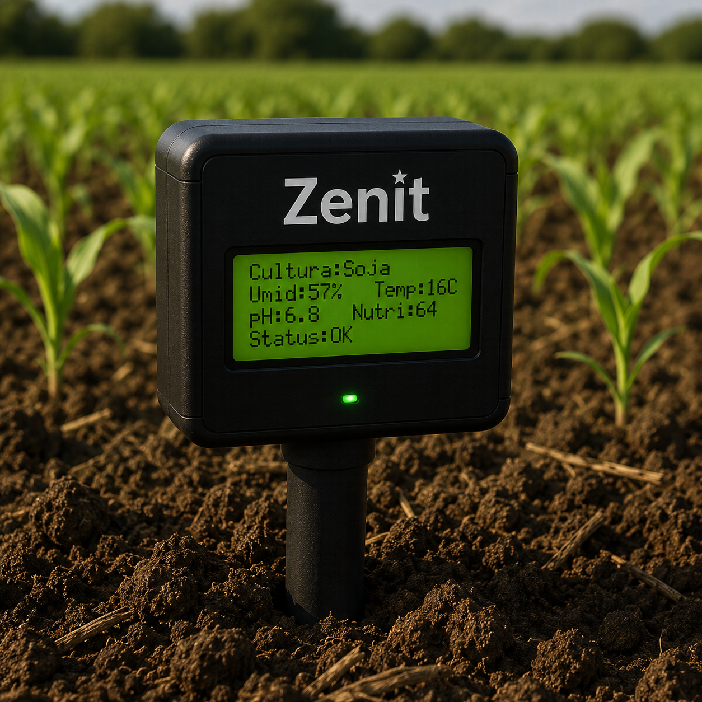
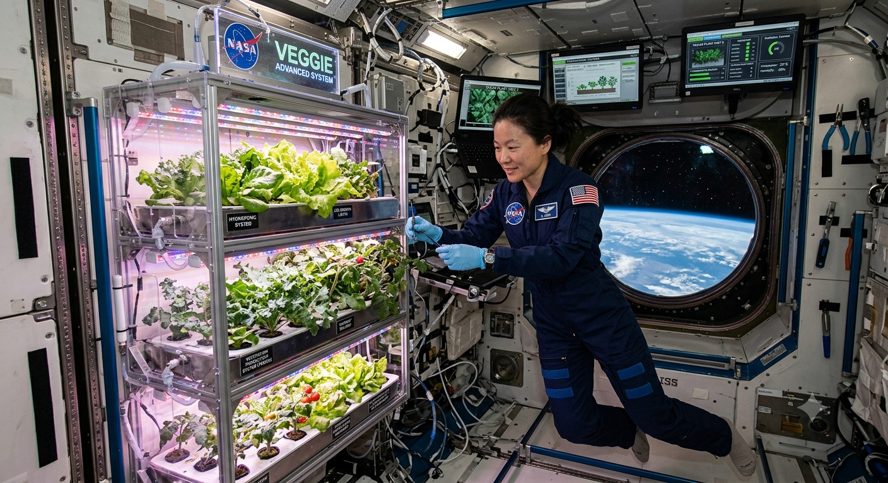

Do solo ao espaço, dados que cultivam o futuro.
Arduino Uno com sensores no solo e imagens satelitais, orientando o agricultor hoje e subsidiando o cultivo espacial amanhã.

Dois desafios,
uma mesma raiz
Como cultivar mais com menos. Na Terra, agricultores carecem de dados. No espaço, faltam técnicas para ambientes fechados.
Agricultor sem dados
Pequenos produtores decidem irrigação e colheita sem informação técnica do solo.
Pesquisa espacial sem referência
Missões de longa duração precisam de autossuficiência alimentar em microgravidade.
Dados dispersos e inacessíveis
Imagens satelitais gratuitas existem, mas sem interface acessível para o campo.
Ecossistema digital que une o campo ao espaço
Arduino UNO com sensores no solo integrado a satélites reais e plataforma web acessível
Zenit Sensor
Dispositivo físico com display LCD. Coleta umidade, temperatura, pH e nutrientes em tempo real.
Satélites orbitais
Sentinel-2, Landsat e PlanetScope fornecem imagens orbitais para monitoramento agrícola e pesquisas espaciais.
NDVI
O Índice de Vegetação por Diferença Normalizada indica a saúde e vigor da cultura via satélite.
Zenit Web
Plataforma online que cruza dados do sensor com imagens satelitais e entrega recomendações.

O que o Zenit quer alcançar
Impacto real para o agricultor hoje e para a pesquisa espacial amanhã.
-
1Monitorar solo em tempo real com sensor e satélite
-
2Recomendar irrigação, plantio e janela de colheita
-
3Identificar padrões de cultivo eficiente com menos recursos
-
4Subsidiar protocolos de cultivo em microgravidade
Para quem é o Zenit
Dois perfis distintos, uma plataforma integrada.
Agricultor familiar
Pequeno e médio produtor que precisa de dados práticos sobre solo e clima para tomar melhores decisões no campo.
Pesquisador espacial
Cientistas e instituições que buscam padrões de cultivo eficiente para desenvolver técnicas de produção em microgravidade.
Por que usar o Zenit
Impacto mensurável para o campo e para a ciência espacial
Menos desperdício
Recomendações de irrigação reduzem uso de água e insumos na lavoura.
Mais produtividade
Alertas de colheita e monitoramento de solo maximizam o rendimento por m².
Dados abertos
Imagens satelitais gratuitas da NASA, ESA e INPE integradas à plataforma.
Legado espacial
Padrões terrestres tornam-se referência para o cultivo em microgravidade.
Como o Zenit funciona no campo
Do sensor instalado no solo à pesquisa espacial, tudo começa com um dado real.
Instala o Zenit Sensor no solo
O dispositivo começa a coletar umidade, pH, temperatura e nutrientes.
Lê os dados no display LCD
No campo, sem celular, as métricas aparecem direto no dispositivo.
Acessa o Zenit Web e recebe alertas
A plataforma cruza dados do sensor com imagens satelitais e gera recomendações.
Pesquisador acessa os padrões
Dashboard espacial mostra as combinações mais eficientes para microgravidade.